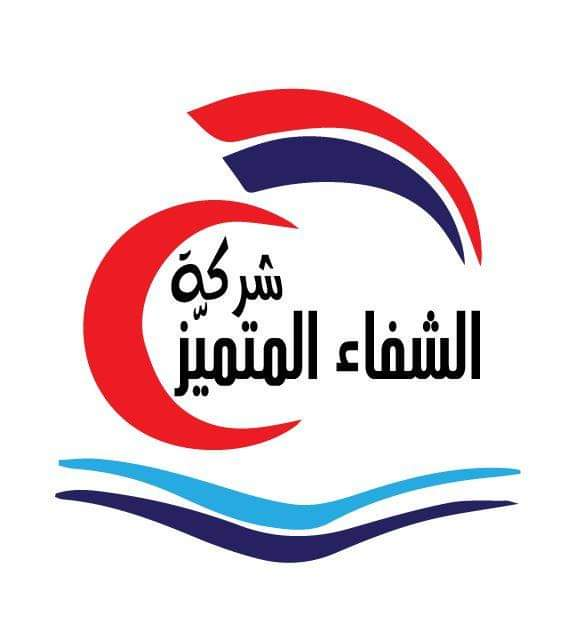

Article
Home
Notre sociéte Al Chefa AlMootamaiz est une société d’assistance sanitaire de service dont une partie de l’activité consiste à fournir une aide médicale à leurs abonnés pendant un déplacement en règle générale à plus de 50 kilomètres du domicile principal. Elles interviennent auprès de clients ayant préalablement, le plus souvent, souscrit un contrat. Pour fournir ces prestations contractuelles, elles disposent d’un plateau d’assistance composé, entre autres, de médecins et parfois d’infi rmiers régulateurs d’une part et de médecins et infi rmiers transporteurs, qui défi nissent et mettent en oeuvre 24 heures sur 24, sept jours sur sept et dans le monde entier, le service approprié au problème médical rencontré.
Contrairement à la compagnie d’assurance qui indemnise un sinistre, la société d’assistance fournit un service en supportant la plupart du temps le coût fi nancier des prestations qu’elle organise. Le champ d’action médical d’une société d’assistance représente à peine 10 % du volume de son activité . Le reste des prestations d’assistance est constitué de l’assistance technique aux véhicules, l’assistance au domicile, l’assistance informatique, l’assistance à la personne et d’autres services innovants comme la téléconsultation médicale proposée plus récemment.
About
Société AlChifa AlMootamaiz assistance Sanitaire societe 100% tunisienne son matricule fiscale 1388607H/A/M/000 Tous ses documents juridiques sont tunisiens et soumis au droit tunisien et aux comptes de la société dans les banques tunisiennes.

La société doit payer les impôts à ses dates et n’a pas d’obligations financières ou légales et doit payer la sécurité sociale aux employés de la société sur une base mensuelle. et un personnel administratif et de terrain intégré Directeur financier - Département de la comptabilité - Département de la facturation - Département de l’information et de la documentation - Département de la mobilité et des déplacements - Département de médecine de terrain - Département de pharmacie - Département d’ambulance et de laboratoire - Département des archives - Bureau d’information. - Bureau des relations extérieures - Bureau des relations internes.

Work
La société AlChefa AlMootamaiz Assistance Sanitaire traite avec les plus grandes et les meilleures cliniques et centres médicaux en Tunisie pour fournir les meilleurs services et soins de santé pour les patients et les blessés arrivant de Libye et pour recevoir les patients blessés et malades avec une aide équipée et une ambulance volante.
Resume
Merci pour ton visite et nous te remercions d'avoir été aussi réactive chez nous et toujours présente lorsque nous avions besoin de toi. Merci pour ton engagement et ta bonne humeur, intacte même la veille du lancement lorsque nos demandes se multipliaient. Merci encore pour tout !